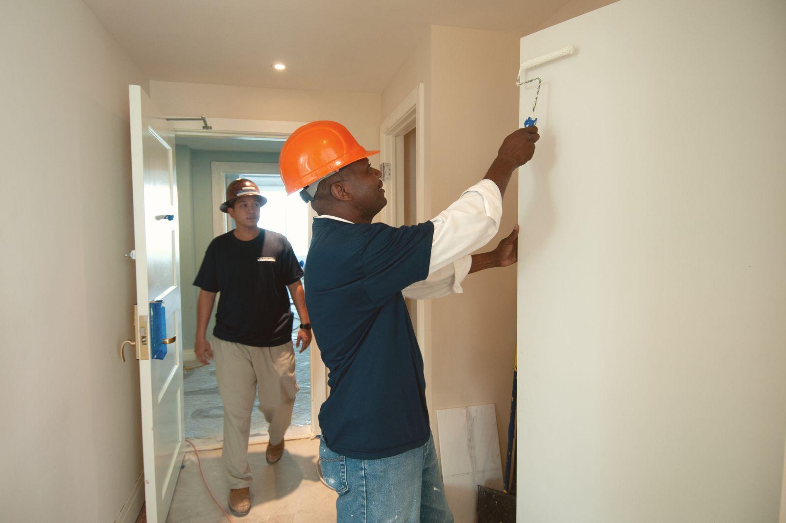
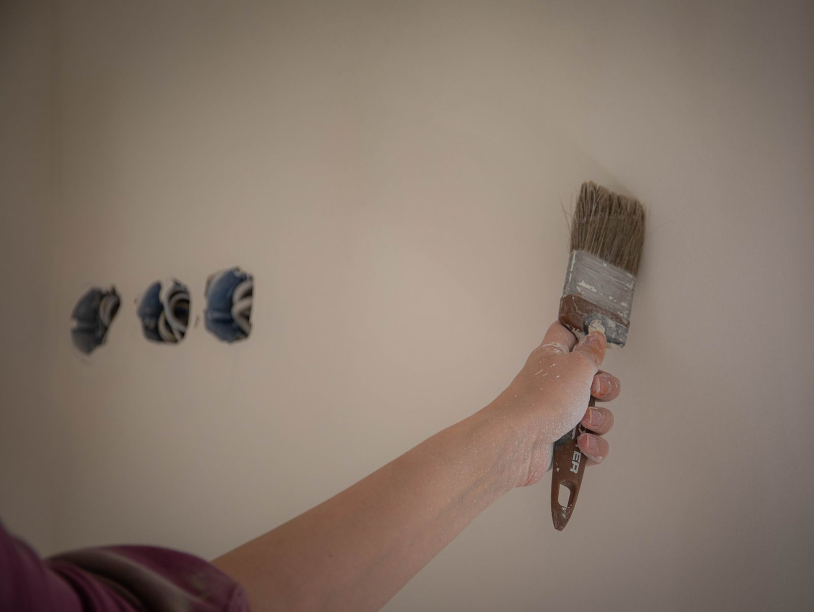

Notes · Interior painting
What Interior Painting Costs in the Southwest Suburbs, and What Actually Changes the Price
Published market ranges for interior painting, and the six things that move a quote from $600 to $2,000 on the same room. Southwest suburbs. Call 708-935-4289.

About the numbers on this page
Every dollar figure below is a published market range from the sources listed at the end of the post. None of it is a Colors Your Way USA price. Every job is quoted after a walk-through, because the two things that decide the number are the condition of what is already there and how much trim is involved, and neither of those is visible in a photograph.
The photographs on this page are stock. They are placeholders until Mike Walsh’s own job photos are available. Any diagrams are drawn for this post.
Almost nobody in this market publishes a price. You call five painters, you get five numbers, and nothing explains why one of them is triple another one. That is not a coincidence and it is not a scam. It is that "paint a room" describes about six different jobs.
This post does two things. It shows you the published market ranges from national cost publishers so you have a starting frame. Then it explains the six things that decide where inside that range your house lands, which is the part that actually helps you read a quote.
One thing up front, because it matters. Every dollar figure below is a published range from a national cost source, named and linked at the bottom. None of it is our price. We quote a job after walking it, because that is the only honest way to price work you have not seen. If a contractor gives you a firm number over the phone without looking at the house, they are either guessing high to protect themselves or guessing low to get in the door.
The published ranges, by room
| Room | Typical range |
|---|---|
| Half bath | $50 to $150 |
| Master bath, about 70 sq ft | $350 to $650 |
| Bedroom, about 132 sq ft | $300 to $800 |
| Kitchen | $200 to $750 |
| Dining room, 300 to 400 sq ft | $600 to $1,000 |
| Living room, about 340 sq ft | $600 to $2,000 |
Source: This Old House, interior painting cost.
Read the living room line again. Six hundred dollars to two thousand dollars, on the same nominal room. That is a 3.3x spread, and nothing about the paint explains it. That gap is the whole subject of this post.
A second publisher puts one room, all in, at $364 to $965 with a most common figure around $593, and prices the work at $0.81 to $1.35 per square foot for seal, prime and two coats. On a 400 square foot room that is $324 to $540. On a 1,200 square foot open area it is $972 to $1,620.
Where the money actually is: it is not the walls
Here is the part most homeowners get wrong. When you picture a paint job you picture walls. The published averages say the walls are the cheapest part of the room.
Trim and doors together average roughly 2.8 times what walls average. Trim is billed by the linear foot, commonly $1 to $3 per foot inside, with doors at $40 to $100 each and stairways at $15 to $30 per linear foot.
This is why a 1960s Bridgeview or Oak Lawn ranch with heavy casing, six panel doors, full baseboard runs and a wood staircase is a completely different job from a newer open plan house with the same floor area and almost no trim in it. Same square footage. Not the same job. Not the same price.
The practical takeaway: when you get a quote, find out what is included. "Paint the living room" can mean walls only, or walls plus ceiling, or walls plus ceiling plus trim plus doors plus window frames. That single ambiguity is most of the difference between two quotes you thought were comparable.
Why two national publishers disagree by 2x on a whole house
| Whole interior, 2,000 sq ft home | Published figure |
|---|---|
| This Old House | $2,000 to $8,000 |
| Thumbtack, at $4.51 to $7.53 per sq ft | $9,020 to $15,060 |
These are not both wrong. They are measuring different jobs. The lower figure is closer to walls only. The higher figure is closer to walls, ceilings, trim, doors and frames with real prep. Same two words on the estimate, roughly double the work.
The six things that move your number
1. Prep condition
This is the largest single variable and the one you can see least. Patched drywall, nail pops, nicotine staining, old wallpaper adhesive, chalky plaster and peeling enamel all add hours before a finish coat goes anywhere.
The rate data makes the point. Drywall repair labor starts around $75 an hour. General interior painting labor averages around $60. Textured surfaces carry a stated uplift of $0.50 to $1 per square foot. Prep hours cost more than brush hours, which is exactly why a cheap quote is usually a quote with the prep taken out of it. There is a whole post on how to spot that: how to tell good prep from a fast cheap job.
2. Coats, and whether you are changing color
The per square foot figures above assume two coats. Going dark to light, or into any deep base color, means a tinted primer plus what is effectively a third coat. That is roughly a fifty percent labor increase on the finish, and it is the single most common thing homeowners do not expect to pay for.
If your budget is tight, staying within a few shades of what is already on the wall is the cheapest real decision you can make.
3. Ceiling height
A two story foyer, a vaulted great room or a stairwell is not the same room as an eight foot bedroom. Ladders and staging turn a one person room into a two person room, or a slow room. These should never be quoted at a flat room rate, and if someone quotes your foyer at bedroom money, ask how they plan to reach it.
4. Trim count and cut-in footage
Covered above. Count your doors before you call anyone. It is the fastest way to predict whether your quote is going to surprise you.
5. Pre-1978 housing and the lead-safe rule
This one is specific to our area and it is not optional.
The EPA Renovation, Repair and Painting rule requires that anyone paid to perform work that disturbs painted surfaces in homes built before 1978 be certified, and the EPA states plainly that this includes all firms, "even sole proprietorships."
Now look at the housing stock here.
| Town | Median year structure built |
|---|---|
| Evergreen Park | 1955 |
| Burbank | 1965 |
| Oak Lawn | 1967 |
| Worth | 1967 |
| Hickory Hills | 1970 |
| Chicago Ridge | 1973 |
| Alsip | 1974 |
| Bridgeview | 1975 |
| Justice | 1976 |
| Palos Hills | 1977 |
Source: U.S. Census Bureau, American Community Survey 5-year estimates 2023, table B25035.
Every one of those medians is before 1978. That means more than half the houses in these towns fall under the rule, and containment, HEPA vacuuming and cleanup are real, billable hours on those jobs. A bid that ignores it is cheaper because it is doing less, not because the contractor is more efficient.
Ask any painter you are considering for their EPA lead-safe firm certification number before work starts. It is a number. They either have it or they do not.
6. Mobilization, which is why one small job prices badly
Every job carries fixed costs that do not scale: the estimate visit, the drive, the setup, the masking, the cleanup, the invoice. On a five room job those spread across five rooms. On a one room job they land on one room.
This Old House says it directly: painting multiple rooms does not double the cost, because overhead spreads across the job. Read backwards, that is why a single small room is the worst value per square foot you can buy, and why job minimums exist. It is arithmetic, not attitude.
The move, if you have a small job: bundle it. If you are having the hallway done, get the two bedrooms done in the same visit. If we are already in the house for a repaint, adding the drywall repair or the trim work costs you nothing in setup and nothing in a second trip.
One more thing that changes the price: textured and popcorn ceilings
Painting a ceiling flat runs about $1 to $2.50 per square foot. Removing popcorn texture and finishing the ceiling afterward runs roughly $1.80 to $5.50 per square foot once you add removal to the finish coat. Same ceiling, two to three times the ticket.
Important, and this is the part to take seriously: popcorn texture in a pre-1980 home is a test-first job, not a scrape-first job. Asbestos was used in ceiling texture in that era. The correct order is test, then decide. Anyone who offers to start scraping your 1972 ceiling on the spot is telling you something about how they work.
What a quote should actually itemize
Bring this list to whoever you are getting a bid from.
| Line item | Why it matters |
|---|---|
| Which surfaces are included | Walls only, or walls, ceilings, trim, doors and frames |
| Number of coats, and primer | Two coats is the industry assumption. Color change usually needs more |
| Prep scope, in words | Patching, sanding, caulking, degreasing, wallpaper removal |
| Ceilings over eight feet | Staging and access, priced separately |
| Product and sheen, by name | Interior paint runs roughly $30 to $60 a gallon at the grades worth using |
| Pre-1978 lead-safe handling | Containment and cleanup, and the firm certification number |
| Who moves and covers furniture | A real cost either way |
| Timeline and crew size | Tells you whether the price and the schedule are consistent |
If a quote does not distinguish between those, the two quotes on your kitchen table are not comparable and you are not choosing on price. You are choosing on wording.

The short version
- Walls are the cheap part. Trim, doors and frames are where the labor sits.
- A 3.3x spread on the same room is real, and it is prep, coats, height, trim count and access.
- More than half the houses in this area were built before 1978, and that is a rule, not an upsell.
- Bundling work into one visit is the only reliable way to lower cost per square foot.
- No honest firm number exists until somebody has walked the job.
We are based at 7900 W. 83rd St. in Bridgeview and we quote interior work across the southwest suburbs. If you want a number for your actual house instead of a national average, call 708-935-4289.
More on this: our interior painting work and drywall repair and painting, which is where most of the prep hours go. If you are weighing a kitchen, read cabinet refinishing versus replacing.
References
- This Old House, Interior Painting Cost. https://www.thisoldhouse.com/painting/reviews/interior-painting-cost
- Thumbtack, Interior Painting Cost. https://www.thumbtack.com/p/interior-painting-cost
- Thumbtack, Cost to Paint a Room. https://www.thumbtack.com/p/cost-to-paint-a-room
- Thumbtack, Drywall Repair Cost. https://www.thumbtack.com/p/drywall-repair-cost
- Thumbtack, Popcorn Ceiling Removal Cost. https://www.thumbtack.com/p/popcorn-ceiling-removal-cost
- U.S. Environmental Protection Agency, Lead Renovation, Repair and Painting Program. https://www.epa.gov/lead/lead-renovation-repair-and-painting-program
- U.S. Environmental Protection Agency, Protect Your Family from Sources of Lead. https://www.epa.gov/lead/protect-your-family-sources-lead
- U.S. Census Bureau, American Community Survey 5-year estimates, 2023, table B25035, retrieved via the Census Data API. https://www.census.gov/programs-surveys/acs
Cost figures cited above were published by the named sources and retrieved on August 31, 2026. They are national market ranges, not a quote, and not our prices.
See our interior painting page
Related